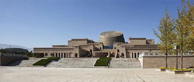
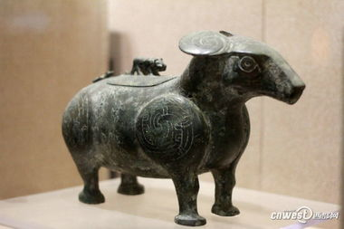
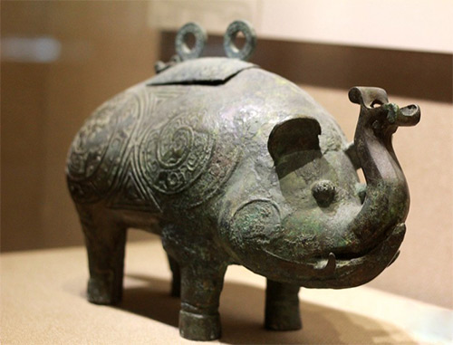

宝鸡青铜器是由红铜与锡的合金铸成的器具，主要是先秦时期用铜锡合金制作的器物， 简称“铜器”，包括饮器、酒器、乐器、铜器、兵器等。它的颜色多为深墨绿色和古铜色， 由于是纯手工制造，所以每一件青铜器都是世界上独一无二的。
宝鸡青铜器是我们的祖先对人类物质文明的巨大贡献，就铜器的使用规模、铸造工艺及品种而言， 世界上没有一个地方的铜器可以与中国古代铜器相比拟，这也是中国古代铜器在世界艺术史上占有 独特地位并引起普遍重视的原因之一。 青铜器也被称为“鼎”，随着社会的发展，鼎由最初的烧煮食物的炊具逐步演变为一种礼器。 我们常用的成语“声名鼎鼎”“鼎力相助”“鼎足之势”均是由于鼎而衍生出来的， 唐代王勃的《滕王阁序》中有记载“钟鸣鼎食之家”意思是吃饭时桌上摆放着很多鼎的人家， 形容富贵人家非常奢华的生活，这些足以说明在古代青铜器的发展和繁荣，俨然成为了权利与财富的象征， 鼎的多少反映了地位的高低;鼎的轻重标志着权力的大小。
形成期：古文献上纪载尧舜禹时代人们已开始冶铸青铜器, 黄河、长江中下游地区的龙山时代遗址里，经考古发掘挖出了青铜器制品。 鼎盛期：在夏商西周，春秋战国早期是青铜器的鼎盛时期， 延续时间约一千六百余年。这个时期的青铜器主要分为礼器、兵器及杂器，还有用于宗庙祭祀活动中的乐器。
战国末年至秦汉末年这一时期，传统的礼仪制度已彻底瓦解， 铁制品已得到广泛使用。到了东汉末年，陶瓷器得到较大发展， 因此相对粗糙厚重的青铜器被挤出了“市场”。 宝鸡青铜器是流行于新石器时代晚期至秦汉时期的一种盛放物品的器皿， 所谓青铜就是铜与锡或铅等元素按一定比例熔铸而成的合金，以铜为主， 颜色呈青，故名青铜。青铜器以商周出产的青铜器最为精美， 最初是小型工具或饰物;到了夏代开始有了青铜的容器和兵器; 在商中期青铜器的品种已非常丰富，并出现了铭文和精细的花纹; 商晚期至西周早期是青铜器发展的鼎盛时期，器型多种多样，铭文逐渐加长， 花纹繁缛富丽，司母戊鼎和四羊方尊就是其中颇具盛名的代表作。  